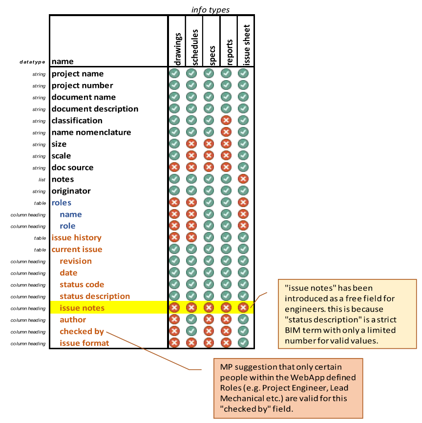

Documents Issue Info Review (2023OCT)

Drawings
- no “authored by” or “checked by” fields (or any authoring information)
- “project leader” only (same for all information)
- no issue history (this is in issue sheet)
- includes Uniclass classification field
Specifications

- shows issue history
- no “authored by” or “checked by” fields
- roles on project indicated (not necessarily contributors to the specific document?)
- doesn’t include Uniclass classification field
- status not shown in Issue History
Reports
- no structured filename information
- doesn’t include Uniclass classification field
Schedules

- shows issue history
- includes “engineer” and “project leader” for every issue
- doesn’t include Uniclass classification field
Issue Sheets

- no authoring information
- doesn’t include Uniclass classification field
Notes from J6865
example: 6865 WOOD WHARF PHASE 3 J1-J3 (but probably the same for all Canary Wharf Projects)
Canary Wharf QA process required: Authored By and Checked By fields
Discussion from Pete B (Project Engineer for Project)
We have used the engineer and project leader fields elsewhere to cover author and checked_by. However the distinction may get lost in translation. Plus our more obstinate clients are asking for author and checked_by unique not only to the current document (1) but also for the document’s history (2). The project leader field I imagine is set more globally, if automated.
showing current author and checked_by are hard to object to. Whilst, as far as I can see, there’s nothing explicit in ISO 19650, I think it probably is implicit in the fact that a document controller (who knows nothing about the technical content) can somehow independently accept
on behalf of the appointing party that the document is suitable to be shared. For a simple and commonly used indication that it has been checked by someone who didn’t originally draft it. (two pairs of eyes have seen it) the initials of the people involved is a practical way of this. It does also avoid personal identifiable information entering public domain (even if unintentional) which I also agree is important.We have had QA rejections unfortunately from clients wanting to see the initials appear in the revision history. I don’t see why they need > this since the information about authoring and checking is out of date and we don’t retain other out of date information in the document (it would become contradictory, nonsensical and unreadable). However it has been habit for a long time and other consultants readily do it. In isolation it seems such a small request that I’m not prepared to waste time arguing against it. Unless perhaps at the draft BEP stage if we spot > it. I’m sure others will feel the same.